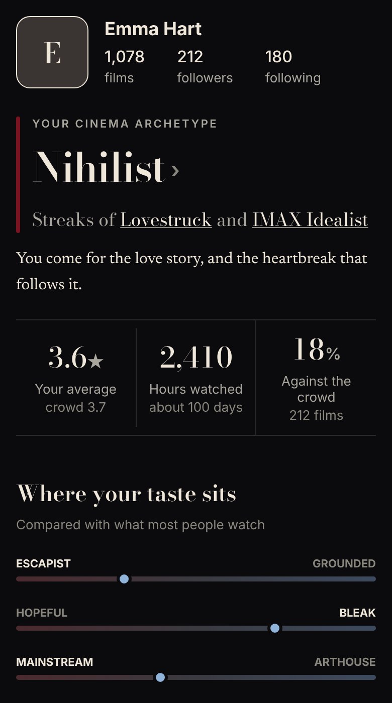
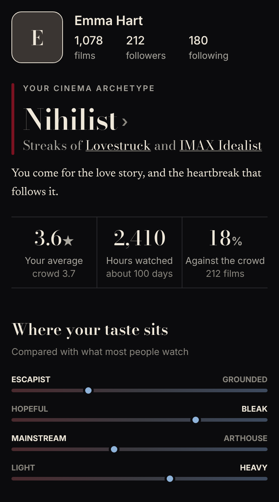
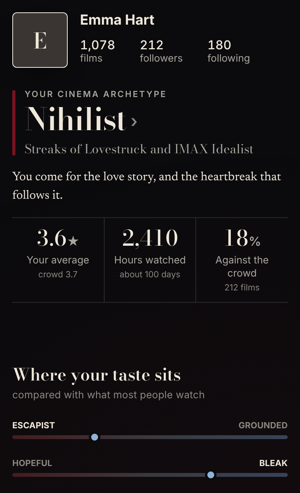
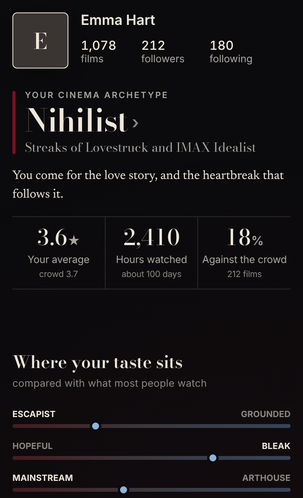
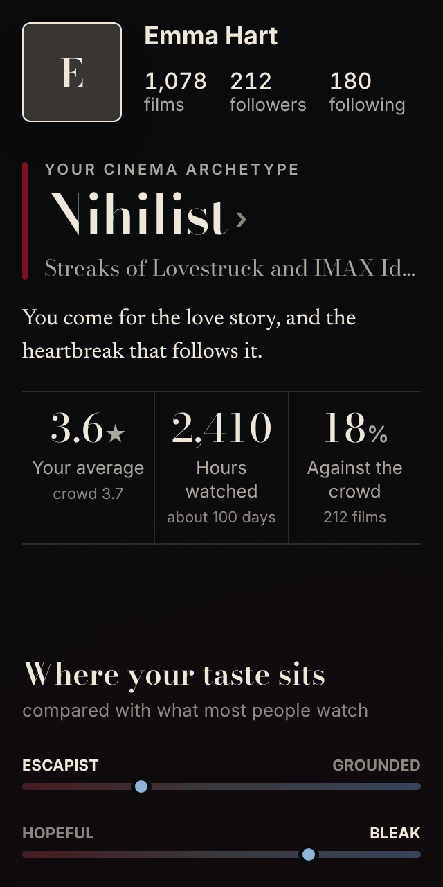
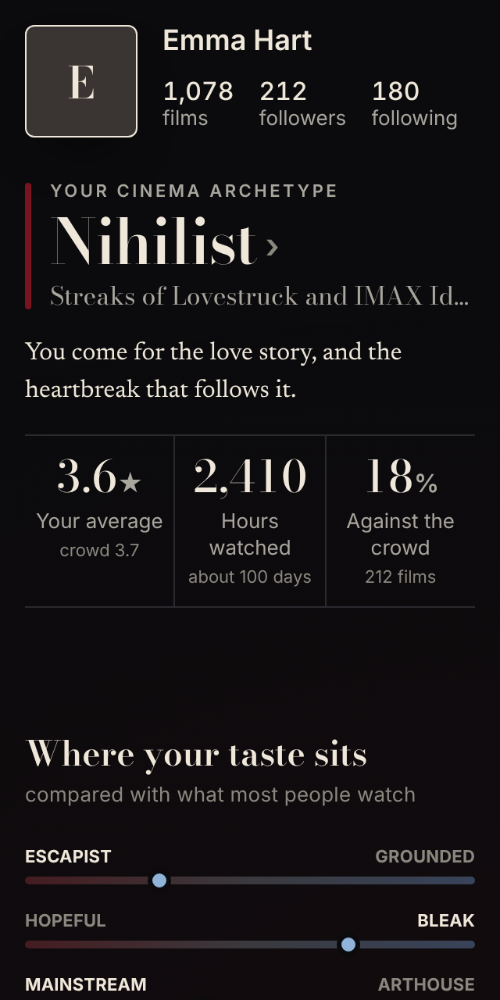

Four visual fixes from the owner's notes (2026-11-06), built and waiting for approval. Web pictures are the real page CSS (globals.css) with stand-in data; iPhone pictures are drawn from the SwiftUI values at 390pt with Bodoni Moda and Newsreader (the system font stands in for SF).
Where your taste sits: 16 between the axes, was 24.
The streak line under the archetype: "Streaks of Lovestruck and IMAX Idealist" sits about 16 under the name's baseline, like a heading and its subline. On the iPhone it was about 32 (the name's box keeps the Bodoni descent under it, then 8 more); on the web about 20.
The three figures: the numbers share one line. On the iPhone the row was centred, so "Against the crowd" on two lines pushed its 18% up; now the row is top-aligned and three figures pad 2 a side, so the label is one line at 390. Web labels stay one line from 375px; at 320 a label may wrap, under its own number.
The name in the header: semibold (600), was bold (700).
iPhone, 390pt

Before

After
Web, 390px

Before

After
Web, 320px

Before

After: the numbers on one line, a long label wraps under its own number